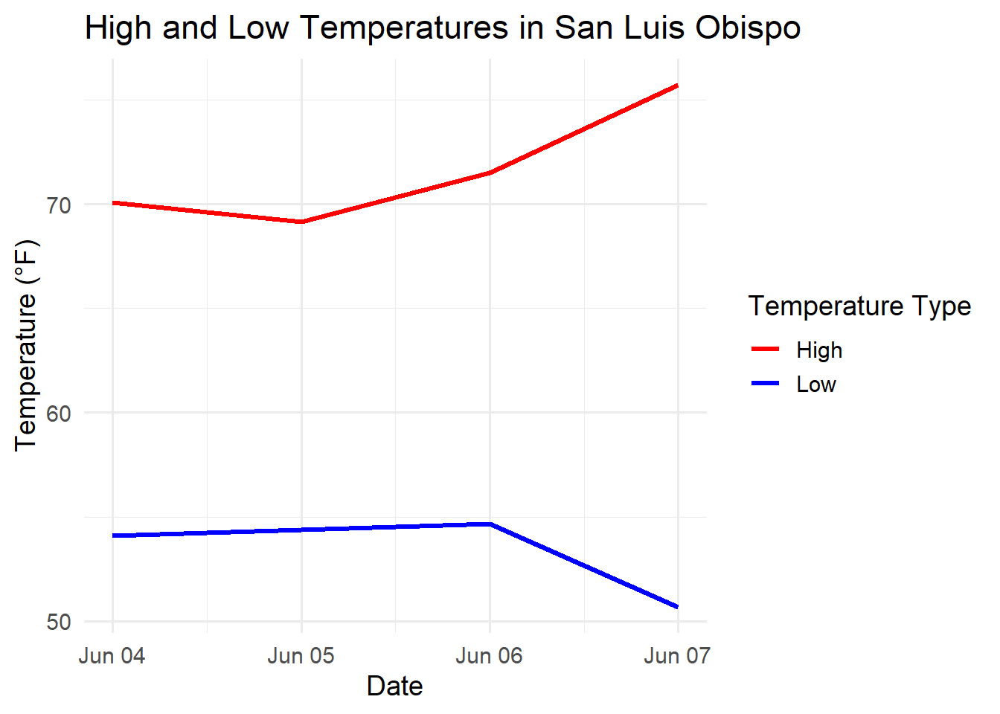
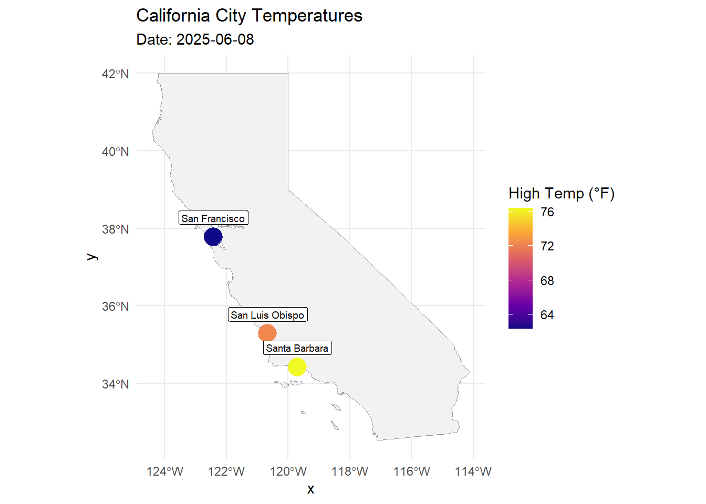

library(httr2) # Makes web requests
library(tibble) # Tidyverse version of data.frame
library(lubridate) # Time and date handling
library(ggplot2) # Visualizations
library(dplyr) # Data manipulation
library(dotenv) # Load environment variables
library(glue) # Attach strings togetherWeather Data - OpenWeatherAPI
Session 2: Using OpenWeatherAPI

Overview of different offerings from OpenWeather:
| Feature | Current Weather API | Geocoding API | One Call API |
|---|---|---|---|
| Purpose | Get current weather for a city or location | Convert city names to coordinates | Get full weather data for a coordinate |
| Input | City name, city ID, coordinates, or zip | City name or zip code | Latitude & Longitude |
| Output | Temperature, conditions, wind, etc. | Location info (lat/lon, country, etc.) | Current, hourly, daily, alerts (optionally filtered) |
| Coordinates needed? | No | No | Yes |
| Units supported | standard, metric, imperial | N/A | standard, metric, imperial |
| Endpoint URL | /data/2.5/weather |
/geo/1.0/direct |
/data/3.0/onecall |
| Use case | Lightweight current conditions | Finding lat/lon of cities | Complete weather view |
Load Libraries
Load API Key from Environment
Using dotenv::load_dot_env() we will load our .Renviron.txt that contains our API Key. Using Sys.getenv("API_KEY") we can supply our API Key whenever needed.
dotenv::load_dot_env(file = ".Renviron.txt")
# Sys.getenv("API_KEY")Get Current Weather for a Given City
Step 1: Select a City
city_name <- "San Luis Obispo"Step 2: Create API Request URL
Using glue() to attach the base URL, the city name, the API Key, and units together and assign it to current_weather_url
Discussion: What is the ‘query’ format vs the URL glue form?
A: Query format can specify parameters in a more human and modular way, but URL format fosters understanding of HTML and web addresses.

current_weather_url <- glue("https://api.openweathermap.org/data/2.5/weather?",
"q=", URLencode(city_name),
"&appid=", Sys.getenv("API_KEY"),
"&units=", "imperial")
# Query Method
# req <- request("https://api.openweathermap.org/data/2.5/weather") |>
#req_url_query(
#q = city_name,
#appid = Sys.getenv("API_KEY"),
#units = "imperial"
#)Step 3: Call API
First, we assign the URL we created to a request object, called req. Then, we use httr2::req_perform() to call the OpenWeather API and assign the response to a variable. We then use httr2::resp_content_type() to see what our result looks like.
req <- request(current_weather_url)
response <- req_perform(req)
httr2::resp_content_type(response)[1] "application/json"Discussion: What does application mean? What is JSON?
Step 4: Parse Response
Using logic, we execute the below code if the status code is 200 (meaning OK, successful). We use httr2::resp_status() to identify the status code. The resulting data is in the JSON form, which appears as a named list sometimes containing other lists within in it, these being “nested.”
Then, using httr2::resp_body_json(), we get our list of nested lists.
as.data.frame() converts this list into a data.frame object, and then we print the data frame.
If the status code is not 200, we print a message stating that the process has failed.
Discussion: What are other status codes we know? What about 404?
if (resp_status(response) == 200) {
# Parse JSON
result <- resp_body_json(response)
# Convert to data frame directly
currweather_df <- as.data.frame(result)
print(select(currweather_df, name, coord.lon, coord.lat, weather.main, main.temp))
} else {
cat("Failed. Status code:", resp_status(response), "\n")
} name coord.lon coord.lat weather.main main.temp
1 San Luis Obispo -120.5343 35.3666 Clear 72.73Geocoding API
The Geocode API from OpenWeather retrieves the latitude and longitude for a given city.
Function: Geocode
# Step 1: Define function "geocode" that accepts the parameter "city"
geocode <- function(city){
# Step 2: Create API request URL
geo_url <- glue(
"http://api.openweathermap.org/geo/1.0/direct?",
"q=", URLencode(city),
"&limit=1&appid=", Sys.getenv("API_KEY")
)
# Step 3: Use req_perform() and request() to call the API with the URL request
geo_response <- req_perform(request(geo_url))
# Step 4: If the status code is 200 (OK), use resp_body_json() to parse our response and as.data.frame to coerce it to data.frame.
if (resp_status(geo_response) == 200) {
geo_data <- resp_body_json(geo_response) |>
as.data.frame()
# Step 5: Assess if the output has 0 length, meaning no result. If so, stop and display an error message.
if (length(geo_data) == 0) {
stop("City not found. Please check the city name.")
}
# Step 6: Assign latitude and longitude to variables, and use round() to clip it down to 2 decimal places.
lat <- round(geo_data$lat, digits = 2)
lon <- round(geo_data$lon, digits = 2)
# Step 7: Print a string displaying the city name and latitude / longitude.
return(cat("Coordinates for", city, "-> Latitude:", lat, "Longitude:", lon, "\n"))
}
}Discussion: What else could be added here? Subtracted? Why the output string?
Test Geocode Function
geocode("Ames, IA, USA")Coordinates for Ames, IA, USA -> Latitude: 42.03 Longitude: -93.62 Obtain Past 5 Days Weather Given City
Now, using Geocoding API, as well as the OneCall 3.0 API, we will get the past 5 days of weather for a city of our choosing.
# Step 1: Use Geocoding API to get lattitude and longitude
# Step 1a: Construct URL query using city name and API key
geo_url <- glue(
"http://api.openweathermap.org/geo/1.0/direct?",
"q=", URLencode(city_name),
"&limit=1&appid=", Sys.getenv("API_KEY")
)# Step 1b: Define 'numdays' variable to the amount of days back to include weather data
# Ex: numdays = 5 will retrieve the past 5 days of weather
numdays <- 5# Step 1c:
# Use req_perform() and request() to call the API with the URL request
geo_response <- req_perform(request(geo_url))
# Step 1d: If the status code is 200 (OK), use resp_body_json() to parse our response and as.data.frame to coerce it to data.frame.
if (resp_status(geo_response) == 200) {
geo_data_df <- resp_body_json(geo_response) |>
as.data.frame()
# Step 1e: Assess if the output has 0 length, meaning no result. If so, stop and display an error message.
if (length(geo_data_df) == 0) {
stop("City not found. Please check the city name.")
}
# Step 1f: Assign latitude and longitude to variables, and use round() to clip it down to 2 decimal places.
lat <- round(geo_data_df$lat, digits = 2)
lon <- round(geo_data_df$lon, digits = 2)
# Optional: Print a string displaying the city name and latitude / longitude.
cat("Coordinates for", city_name, "-> Latitude:", lat, "Longitude:", lon, "\n")
# Step 2: Use the One Call API to get the past 5 days of weather data
# Step 2a: Define the date range using variable 'numdays'
date_range <- as.character(lubridate::today() - days(1:numdays))
# Step 2b: Initialize data frame to hold the outputs. "hist_weather" for historical weather data.
hist_weather_df <- data.frame()
# Step 2c: Loop over dates and make an API call for each day. For every date in the date vector, supply latitude, longitude, the different date, API key, and provide unit preference.
for (date in date_range) {
weather_url <- glue(
"https://api.openweathermap.org/data/3.0/onecall/day_summary?",
"lat=", lat,
"&lon=", lon,
"&date=", date,
"&appid=", Sys.getenv("API_KEY"),
"&units=imperial"
)
# Step 2d: Make the API call using the different weather_url queries for each date. Store these in weather_response.
weather_response <- req_perform(request(weather_url))
# Step 2e: Use logic to evaluate the response and use resp_body_JSON() and as.data.frame. to parse our response and coerce to data.frame.
if (resp_status(weather_response) == 200) {
daily_weather_df <- resp_body_json(weather_response) |>
as.data.frame()
# Step 2f: Add date and city name columns using mutate()
daily_weather_df <- daily_weather_df |>
mutate(
city =city_name,
date = date)
# Step 2g: Use bind_rows to add all the rows to the hist_weather data frame.
hist_weather_df <- bind_rows(hist_weather_df, daily_weather_df)
} else {
# Step 2i: Use logic (else) to print an error message for when weather data is not obtained.
warning(paste("Failed to get weather for", date, "-", resp_status(weather_response)))
}
}
print(hist_weather_df)
} else {
stop("Geocoding failed. Check your API key or city name.")
}Coordinates for San Luis Obispo -> Latitude: 35.28 Longitude: -120.66
lat lon tz date units afternoon afternoon.1 total
1 35.28 -120.66 -07:00 2025-06-07 imperial 0 69 0
2 35.28 -120.66 -07:00 2025-06-06 imperial 0 72 0
3 35.28 -120.66 -07:00 2025-06-05 imperial 100 72 0
4 35.28 -120.66 -07:00 2025-06-04 imperial 0 67 0
5 35.28 -120.66 -07:00 2025-06-03 imperial 0 58 0
temperature.min temperature.max temperature.afternoon temperature.night
1 50.68 75.72 70.27 54.95
2 54.68 71.51 66.97 55.04
3 54.39 69.15 64.35 55.00
4 54.10 70.09 68.95 55.49
5 54.91 72.57 72.57 56.62
temperature.evening temperature.morning afternoon.2 wind.max.speed
1 64.04 50.68 1015 16.11
2 66.13 55.11 1014 11.50
3 64.47 54.45 1013 11.50
4 62.67 54.23 1012 10.36
5 62.74 54.93 1014 14.97
wind.max.direction city
1 310 San Luis Obispo
2 300 San Luis Obispo
3 220 San Luis Obispo
4 310 San Luis Obispo
5 310 San Luis ObispoDiscussion: Why wrap as.character() around the date range?
A: If not, dates will mathematically evaluate and become integers.
| JSON Key | R Type | Notes |
|---|---|---|
temperature.min |
numeric | Minimum temp for the day |
temperature.max |
numeric | Maximum temp for the day |
wind.max.speed |
numeric | Peak wind speed |
date (added) |
Date | From loop date |
city (added) |
character | City name from geocoding |
The API returns a JSON object representing summary statistics for a specific location and date. The root of the JSON is a named list.
The list contains other lists such as temperature, which have multiple items related to temperature.
These all flatten into column names like precipitation.total, dew_point.afternoon when as.data.frame() is used to coerce.
| temperature.min | temperature.max | wind.max.speed | date | city |
|---|---|---|---|---|
| 50.1 | 75.6 | 12.3 | 2025-04-23 | San Luis Obispo |
Discussion: Any thoughts at this point? What benefits do we get from inspecting the data structure?
Function: Previous Weather
prev_weather <- function(city, numdays){
# Step 1: Use Geocoding API to get lattitude and longitude
# Step 1a: Construct URL query using city name and API key
geo_url <- glue(
"http://api.openweathermap.org/geo/1.0/direct?",
"q=", URLencode(city_name),
"&limit=1&appid=", Sys.getenv("API_KEY")
)
# Step 1c:
geo_response <- req_perform(request(geo_url))
# Step 1d: If the status code is 200 (OK), use resp_body_json() to parse our response and as.data.frame to coerce it to data.frame.
if (resp_status(geo_response) == 200) {
geo_data <- resp_body_json(geo_response) |>
as.data.frame()
# Step 1e: Assess if the output has 0 length, meaning no result. If so, stop and display an error message.
if (length(geo_data) == 0) {
stop("City not found. Please check the city name.")
}
# Step 1f: Assign latitude and longitude to variables, and use round() to clip it down to 2 decimal places.
lat <- round(geo_data$lat, digits = 2)
lon <- round(geo_data$lon, digits = 2)
# Optional: Print a string displaying the city name and latitude / longitude.
cat("Coordinates for", city_name, "-> Latitude:", lat, "Longitude:", lon, "\n")
# Step 2: Use the One Call API to get the past 5 days of weather data
# Step 2a: Define the date range using variable 'numdays'
date_range <- as.character(lubridate::today() - days(1:numdays))
# Step 2b: Initialize data frame to hold the outputs. "hist_weather" for historical weather data.
hist_weather <- data.frame()
# Step 2c: Loop over dates and make an API call for each day. For every date in the date vector, supply latitude, longitude, the different date, API key, and provide unit preference.
for (date in date_range) {
weather_url <- glue(
"https://api.openweathermap.org/data/3.0/onecall/day_summary?",
"lat=", lat,
"&lon=", lon,
"&date=", date,
"&appid=", Sys.getenv("API_KEY"),
"&units=imperial"
)
# Step 2d: Make the API call using the different weather_url queries for each date. Store these in weather_response.
weather_response <- req_perform(request(weather_url))
# Step 2e: Use logic to evaluate the response and use fromJSON() to get the content from the JSON output and use "flatten = TRUE" to unnest the data.
if (resp_status(weather_response) == 200) {
daily_weather_parsed <- resp_body_json(weather_response) |>
as.data.frame()
# Step 2f: Add date and city name columns using mutate()
daily_weather_parsed <- daily_weather_parsed |>
mutate(
city =city_name,
date = date)
# Step 2g: Use bind_rows to add all the rows to the hist_weather data frame.
hist_weather <- bind_rows(hist_weather, daily_weather_parsed)
} else {
# Step 2i: Use logic (else) to print an error message for when weather data is not obtained.
warning(paste("Failed to get weather for", date, "-", resp_status(weather_response)))
}
}
return(hist_weather)
} else {
stop("Geocoding failed. Check your API key or city name.")
}
}Discussion: What is UTF-8 encoding?

prev_weather("San Luis Obispo", 4)Coordinates for San Luis Obispo -> Latitude: 35.28 Longitude: -120.66 lat lon tz date units afternoon afternoon.1 total
1 35.28 -120.66 -07:00 2025-06-07 imperial 0 69 0
2 35.28 -120.66 -07:00 2025-06-06 imperial 0 72 0
3 35.28 -120.66 -07:00 2025-06-05 imperial 100 72 0
4 35.28 -120.66 -07:00 2025-06-04 imperial 0 67 0
temperature.min temperature.max temperature.afternoon temperature.night
1 50.68 75.72 70.27 54.95
2 54.68 71.51 66.97 55.04
3 54.39 69.15 64.35 55.00
4 54.10 70.09 68.95 55.49
temperature.evening temperature.morning afternoon.2 wind.max.speed
1 64.04 50.68 1015 16.11
2 66.13 55.11 1014 11.50
3 64.47 54.45 1013 11.50
4 62.67 54.23 1012 10.36
wind.max.direction city
1 310 San Luis Obispo
2 300 San Luis Obispo
3 220 San Luis Obispo
4 310 San Luis ObispoCreate Visualizations
df4 <- prev_weather("Ames, IA, USA", 4) |> mutate(date = as.Date(date))Coordinates for San Luis Obispo -> Latitude: 35.28 Longitude: -120.66 ggplot(df4, aes(x = date)) +
geom_line(aes(y = temperature.max, color = "High"), linewidth = 1.2) +
geom_line(aes(y = temperature.min, color = "Low"), linewidth = 1.2) +
scale_color_manual(values = c("High" = "red", "Low" = "blue")) +
labs(
title = paste("High and Low Temperatures in", unique(df4$city)),
x = "Date",
y = "Temperature (°F)",
color = "Temperature Type"
) +
theme_minimal(base_size = 14)
library(sf)
library(rnaturalearth)
library(rnaturalearthdata)cities <- c("San Luis Obispo", "Santa Barbara", "San Francisco")
# Function to get coordinates + weather summary
get_city_weather <- function(city, date = Sys.Date()) {
geo_url <- glue(
"http://api.openweathermap.org/geo/1.0/direct?",
"q=", URLencode(city),
"&limit=1&appid=", Sys.getenv("API_KEY")
)
geo_response <- req_perform(request((geo_url)))
if (resp_status(geo_response) == 200) {
geo_data <- as.data.frame(resp_body_json(geo_response))
if (length(geo_data) == 0) return(NULL)
lat <- geo_data$lat
lon <- geo_data$lon
weather_url <- glue(
"https://api.openweathermap.org/data/3.0/onecall/day_summary?",
"lat=", lat,
"&lon=", lon,
"&date=", format(date, "%Y-%m-%d"),
"&appid=", Sys.getenv("API_KEY"),
"&units=imperial"
)
weather_response <- req_perform(request((weather_url)))
if (resp_status(weather_response) == 200) {
weather_data <- (resp_body_json(weather_response))
tibble(
city = city,
date = date,
lat = lat,
lon = lon,
temp_max = weather_data$temperature$max,
temp_min = weather_data$temperature$min
)
} else return(NULL)
} else return(NULL)
}
# Fetch for all cities
weather_df <- bind_rows(lapply(cities, get_city_weather))weather_sf <- weather_df %>%
st_as_sf(coords = c("lon", "lat"), crs = 4326)ca <- ne_states(country = "United States of America", returnclass = "sf") %>%
filter(name == "California")
ggplot() +
geom_sf(data = ca, fill = "gray95", color = "gray60") +
geom_sf(data = weather_sf, aes(color = temp_max), size = 6) +
geom_sf_label(data = weather_sf, aes(label = city), nudge_y = 0.5, size = 2.5) +
scale_color_viridis_c(option = "plasma", name = "High Temp (°F)") +
labs(
title = "California City Temperatures",
subtitle = paste("Date:", Sys.Date())
) +
theme_minimal()Warning in st_point_on_surface.sfc(sf::st_zm(x)): st_point_on_surface may not
give correct results for longitude/latitude data